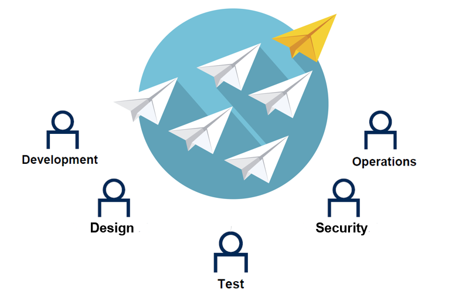

The industry requires that software delivery could be agile and continuous. To achieve this, DevOps aims to integrate the different work teams (Developer team, Test team, Operation team, Design team, Security team, etc.) and work in an integrated way to be able to continuously deliver a quality product. Among the practices that must be carried out in order to implement DevOps in organizations, there are three important issues that should be considered: the way in which teams, processes, and tools related to those processes work to allow the continuous delivery of value to the users. DevOps helps to foster collaboration between the different teams that participate in the creation of systems, promote effective communication using tools and methods, so that all team members are synchronized and all are part of the development process. Statistics show that DevOps teams work 30 times faster, fail 60 times less, and recover 160 times quicker from failures. A culture of trust and a feeling of fellowship were sharing ideas, issues, processes, tools, and goals are the fundamental bases of the DevOps practices and it’s important to keep them aligned in order to have fewer conflicts in the team. It is also necessary to adopt an agile development methodology, in order to achieve these objectives. 
|